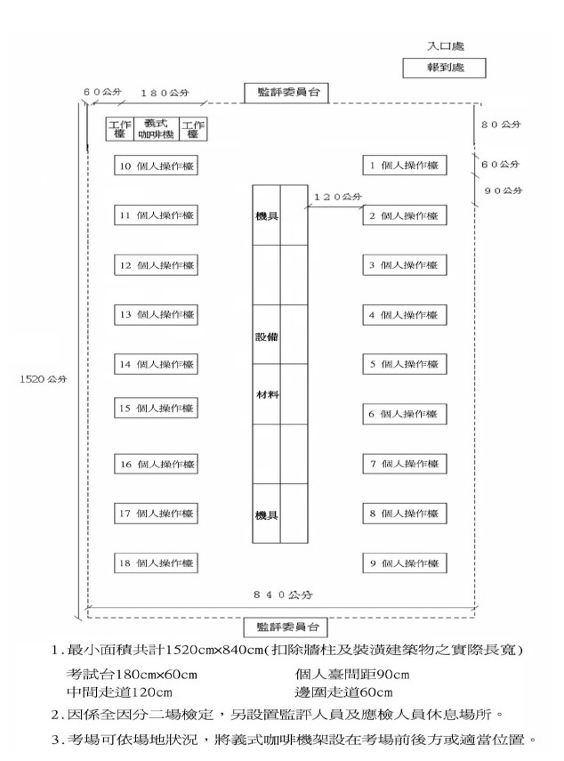
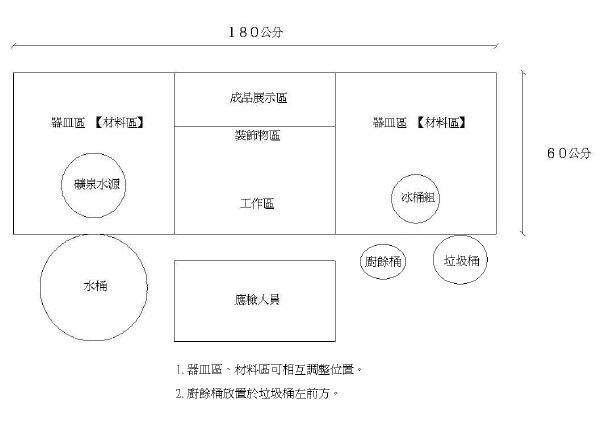
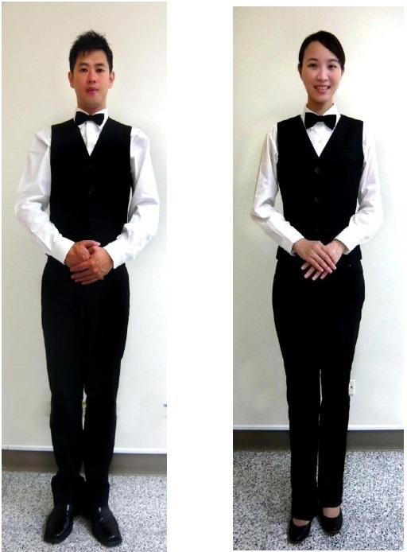

貳、飲料調製丙級技術士技能檢定術科測試應檢人須知
一、綜合注意事項：
(一) 本職類丙級技能檢定術科測試試題有三大題（試題編號：980301，980302，980303），
每大題各有六組別，共計十八組別、每一組別內各有六小題，其題、組別關係如下：
第一題：A1、A2、A3、A4、A5、A6 等六組別。
第二題：B7、B8、B9、B10、B11、B12 等六組別。
第三題：C13、C14、C15、C16、C17、C18 等六組別。
每一應檢人應檢一組別，測試時間為 3 小時（詳如檢定程序時間表）。
(二) 測試當日由監評長亮出二個籤桶及其內容物後，從崗位籤桶（1-18）中抽一崗位號，請該號應檢人於十八題組籤桶（A1、A2、A3、A4、A5、A6、B7、B8、B9、B10、B11、B12、C13、C14、C15、C16、C17、C18）中抽出該應檢人個人之題組，其餘人員則依術科測試檢定序號順序（A1、A2、A3、A4、A5、A6、B7、B8、B9、B10、B11、B12、 C13、C14、C15、C16、C17、C18）現場的題目測試之。主管單位公告電子抽題方式後，測試當日由到場檢定序號最小之應檢人抽出該應檢人個人之題組，其餘人員則依術科測試檢定序號順序現場的題目測試之。
(三) 檢定之設備、工具、材料均由術科測試辦理單位提供，唯應檢人須自備：1.職場專業服裝儀容（如服裝儀容標準說明及圖），2.廚房紙巾一捲（盒）。
(四) 應檢人於測試前詳閱應檢人參考資料，含試題、評審表，以避免違規或操作錯誤情事發生。水果切盤之成品，其份量與擺設方式須與公告圖片相同。柳橙玉兔盤，單耳兔左右不拘。術科測試辦理單位應發放應檢人水果切盤之成品圖卡。
(五) 檢定作業完成時間，不得藉故要求延長時間。
(六) 應檢結束後，其成品不論完成與否均不得要求攜回與飲用，並請確實完成個人操作檯之清潔工作後，始可離開檢定場。
(七) 應檢人應注意工作安全，預防意外事故發生。
(八) 本職類術科測試試題規定之操作、處理手法，僅供應檢人參加應檢時，應先瞭解之共通基礎技術。
二、檢定當日應注意事項：
(一) 應依通知日期時間到達檢定場後，請先到「報到處」辦理報到手續，然後依試務人員安排指定處等候。
(二) 報到時，請出示檢定通知單、准考證及國民身分證或其他法定身分證明。
(三) 報到完畢後，由試務人員集合，在核對人數後，交由當日監評長，並進行服裝儀容檢查，未符合規定者，請詳註原因。服裝儀容未依規定穿著者，不得進場應試，術科成績以不及格論。應檢人如有異議，監評長應邀集所有監評人員召開臨時會議討論並決議之。監評長宣佈當日一般注意事項，並須解說檢定場果汁機及義式咖啡機使用方法。由當日監評長從崗位籤桶（1-18）中抽一崗位號，請該號應檢人代表抽選試題題組，並依序核對檢定號碼。主管單位公告電子抽題方式後，測試當日由到場檢定序號最小之應檢人抽出該應檢人個人之題組，其餘人員則依術科測試檢定序號順序現場的題目測試之。試務人員記錄應檢人員題號同時發給題目，監評長依序核對檢定號碼並簽名確認抽題題目，經監評人員再次確認應檢資料後，等待監評長發「開始」指令。
(四) 應檢人員於術科測試時間開始後 15 分鐘以上尚未進場者視同未報到，並以「缺考」註記。
(五) 監評長宣佈依據辦理單位所提供之機具、設備及材料確認表清點，如有短少或損壞，立即請場地管理人員補充或更換；檢定中損壞之機具、設備及材料經監評人員確認責任後，由該應檢人於檢定結束後賠償之。
(六) 俟監評長宣佈「開始」口令後，才能開始檢定作業。
(七) 應檢人應詳閱試題，若有疑問應於檢定開始二分鐘前提出。
(八) 檢定中不得交談、代人操作或託人操作等違規行為，否則以「扣考」論處。應檢人認為測試題組使用之器具、原料為其他應檢人取用致短缺時，應立即向監評人員反應，經監評人員確認後，得中止該名應檢人測試時間，做適當處理，並補足其測試時間。
(九) 檢定中，術科試題題卡必須放置於操作檯處，應檢人不可攜帶至公共材料區。
(十) 檢定中應注意自己、鄰人及檢定場地之安全。
(十一) 在規定時間內提早完成者，於原地靜候指令。
(十二) 檢定須在規定時間內完成，在監評長宣佈「檢定截止」時，應請立即停止操作。
(十三) 離場前，將檢定通知單請試務人員簽章後才可離開檢定場。
(十四) 離場時，除自備用品外，不得攜帶任何東西出場。
(十五) 不遵守試場規則者，除勒令出場外，取消應檢資格並以「扣考」論處。
(十六) 進入檢定場後，應將所有電子通信設備關閉，以免影響檢定場秩序。
(十七) 本須知未盡事項，依技術士技能檢定及試場作業規則處理。
三、檢定當日檢定程序時間表
(一) 每位應檢人檢定一組別六小題，檢定時間總計三小時。
(二) 每題檢定時間為 30 分鐘（含評分時間）。
| 題數 | 項目 | 進行時間 |
| 第一題 |
前置作業 |
6 分鐘 |
| 評分（停止操作） |
3 分鐘 |
| 調製過程 |
7 分鐘 |
| 成品完成 |
| 評分 |
4 分鐘 |
| 善後處理 |
7 分鐘 |
| 評分 |
3 分鐘 |
| 第二題 |
前置作業 |
6 分鐘 |
| 評分（停止操作） |
3 分鐘 |
| 調製過程 |
7 分鐘 |
| 成品完成 |
| 評分 |
4 分鐘 |
| 善後處理 |
7 分鐘 |
| 評分 |
3 分鐘 |
| 第三題 |
前置作業 |
6 分鐘 |
| 評分（停止操作） |
3 分鐘 |
| 調製過程 |
7 分鐘 |
| 成品完成 |
| 評分 |
4 分鐘 |
| 善後處理 |
7 分鐘 |
| 評分 |
3 分鐘 |
| 第四題 |
前置作業 |
6 分鐘 |
| 評分（停止操作） |
3 分鐘 |
| 調製過程 |
7 分鐘 |
| 成品完成 |
| 評分 |
4 分鐘 |
| 善後處理 |
7 分鐘 |
| 評分 |
3 分鐘 |
| 第五題 |
前置作業 |
6 分鐘 |
| 評分（停止操作） |
3 分鐘 |
| 調製過程 |
7 分鐘 |
| 成品完成 |
| 評分 |
4 分鐘 |
| 善後處理 |
7 分鐘 |
| 評分 |
3 分鐘 |
| 第六題 |
前置作業 |
6 分鐘 |
| 評分（停止操作） |
3 分鐘 |
| 調製過程 |
7 分鐘 |
| 成品完成 |
| 評分 |
4 分鐘 |
| 善後處理 |
7 分鐘 |
| 評分 |
3 分鐘 |
| 進行時間總計： 3 小時 |
五、檢定場平面圖

六、操作台平面圖

七、 服裝儀容標準說明（附圖）
本說明從專業飲務從業人員『重安全』、『講衛生』之工作立場要求下列標準：
(一) 頭 髮：
女性、男性：一律梳理整齊；長髮過肩者須往後綁成髻並戴上髮網；額前頭髮不得長及眼睛。男性不得戴髮箍或髮夾，髮長不得觸及衣領。
(二) 顏面：
女性：不可濃妝艷抹，不可佩戴耳環。
男性：不蓄鬍鬚，鬢角不過耳垂，不可佩戴耳環。
(三) 領結：
女性、男性：一律不限樣式及顏色。
(四) 手：
女性、男性：一律不得留長指甲（超出指肉者謂之）、不著指甲油；雙手潔淨，不戴飾物（含手錶），辦理單位及監評人員請協助及輔導應檢人，於點名作業前，先提供潤滑油協助取下手鐲並提醒針對不可拆除之手鐲，應全程配戴乳膠手套。
(五) 白襯衫
女性、男性：一律長袖（不可捲、摺）並以扣子扣住袖口；長度至手腕。
(六) 背心
女性、男性：一律酒吧背心，長度至腰際，顏色不限。
(七) 長褲：
男性：一律深黑或深藍色並以褲耳繫之以皮帶；褲襠不得短及露出肚臍；褲長達鞋面。
女性：一律深黑或深藍色；褲襠不得短及露出肚臍；褲長達鞋面。
(八) 襪子：
女性：穿膚色絲襪。男性：著黑色襪子(襪子長度須超過腳踝)。
(九) 皮鞋(前、後及兩側全包)：女性、男性均統一為黑色並須擦拭乾淨。
(十) 服裝之材質以棉或混紡之西服布料為準（不可著牛仔褲）。
※服裝儀容未依規定穿著者，不得進場應試，術科成績以不及格論。
（附圖三）職場專業服裝圖示

參、飲料調製丙級技術士技能檢定術科測試試題
一、 檢定名稱：飲料調製
二、 檢定時間：3 小時
三、 檢定說明：
(一) 測試當日由監評長從崗位簽桶（1-18）中抽一崗位號，請該號應檢人於十八題組籤桶（A1、A2、A3、A4、A5、A6、B7、B8、B9、B10、B11、B12、C13、C14、C15、C16、C17、C18）中抽出該應檢人個人之題組，其餘人員則依術科測試檢定序號順序（A1、A2、A3、A4、A5、A6、B7、B8、B9、B10、B11、B12、C13、C14、C15、C16、C17、C18）對應組別序號現場得題目，於規定檢定時間內，完成該組別內六種飲料調製。主管單位公告電子抽題方式後，測試當日由到場檢定序號最小之應檢人抽出該應檢人個人之題組，其餘人員則依術科測試檢定序號順序現場的題目測試之。
(二) 檢定工作程序如下： 檢定時間分配如下：每一小題之前置作業時間為 6 分鐘，調製過程及成品完成時間為 7分鐘，善後處理時間為 7 分鐘，計 20 分鐘，6 題共計 120 分鐘，不含評分時間(參閱檢定程序時間表)。
(三) 技能標準評分範圍涵蓋：
1. 重視職業道德、行業屬性及衛生安全觀念。
2. 前置作業：
(1) 瞭解配方。
(2) 講究準備工作過程中之衛生與安全。
(3) 擺設餐飲業飲料調製機動型態之個人操作檯，含材料區、器皿區、成品區、裝飾物區及工作區。
(4) 正確飲料操作觀念與習慣。
(5) 基礎裝飾物製作技能的熟練度。
3. 調製過程：
(1) 強調過程中之衛生與安全。
(2) 重視基本常識。
(3) 熟練各式基本操作方式。
(4) 正確的機具使用及保養能力。
4. 成品評鑑：
重視成品之色澤、香味、形態與口感。成品評鑑依試題規定之成份、調製法、裝飾物、杯器皿，以現場實作成品為主，試題成品參考圖為參考範例。
5. 善後處理：
(1) 養成正確的物料成本控制觀念。
(2) 處理垃圾、廚餘及水的分類。
(3) 落實清理與維護材料、器皿及設備的能力。
(四) 評分標準：
1. 在規定時間內製作完成的飲料，就以下五項目評分：
(1) 職業道德與重大專業技能違規扣分（實扣）
(2) 前置作業 20%（最多扣 20 分）
(3) 調製過程 30%（最多扣 30 分）
(4) 成品評鑑 30%（最多扣 30 分）
(5) 善後處理 20%（最多扣 20 分）
2. 水果刀、水果夾、砧板請應檢人依照題意取用。
3. 調製使用之配方份量，以杯皿容量 10 等份為配比原則。
4. 每一組別有 6 小題，每小題個別計分，各以 100 分為滿分，並依監評內容規定扣分。
5. 6 小題總扣分超過 240 分（未含）者為不及格。
(五) 應檢人自備應檢事項：
1. 著職場專業服裝儀容（附圖）。
2. 帶廚房紙巾一捲（盒）。
(六) 注意事項：
意外傷害經處理後，於規定測試時間內，仍可繼續應檢。